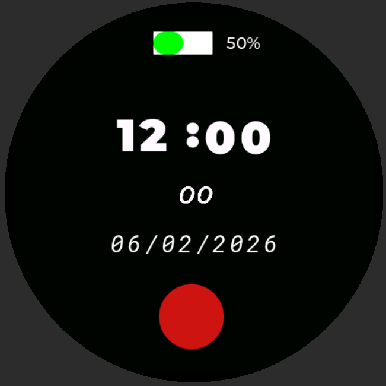
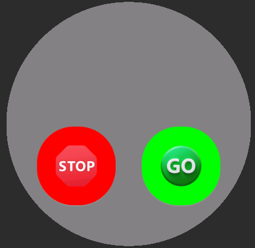
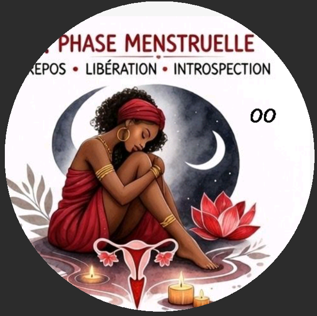
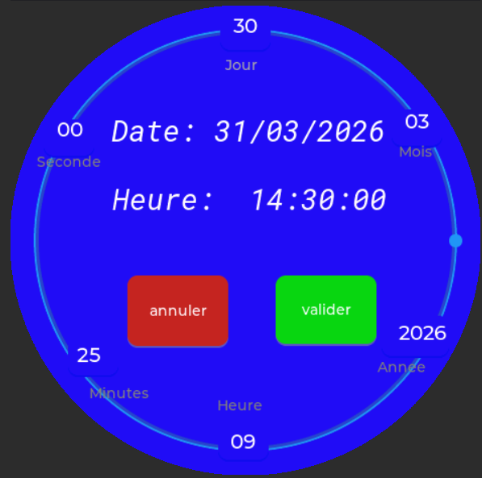
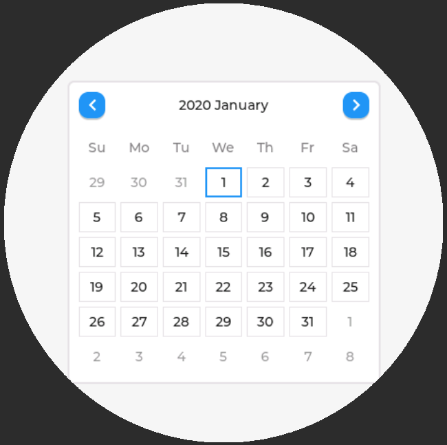

Une expérience utilisateur fluide et interactive
Ce projet consiste à concevoir un système embarqué intelligent basé sur un microcontrôleur ESP32-C6, permettant de suivre un cycle, afficher des informations en temps réel et offrir une interface graphique moderne sur écran AMOLED. L'objectif est de créer une solution interactive, visuelle et intuitive, combinant électronique, programmation embarquée et interface utilisateur.
Le système gère un cycle temporel avec calcul automatique du jour courant, mise à jour dynamique de l'interface et changement de couleurs selon les phases. L'interface intègre des écrans multiples : accueil, informations, QR code, et une animation d'yeux interactifs qui rend l'expérience vivante et engageante.
Une infrastructure modulaire et optimisée
Cœur du système : microcontrôleur puissant avec connectivité Wi-Fi/Bluetooth, gestion multitâche et traitement des entrées utilisateur.
Affichage graphique haute définition 466×466 avec LVGL. Couleurs dynamiques, animations fluides et interface responsive au touch.
Conception visuelle de l'interface utilisateur. Export en code C/C++ prêt à être intégré dans ESP-IDF pour LVGL 8.3.
Gestion multitâche avec mutex et timers pour garantir un système stable, réactif et sans conflits entre tâches concurrentes.
Des capacités avancées pour une expérience utilisateur optimale
Calcul automatique du jour courant avec mise à jour dynamique de l'interface et indicateurs visuels codés par couleurs selon les phases.
Écrans multiples : accueil, informations détaillées, QR code interactif. Navigation fluide et intuitive entre les écrans.
Commandes Démarrer / Arrêter pour contrôler le cycle, avec retour visuel instantané et gestion thread-safe des états.
Accès rapide à un site web, partage d'informations ou interaction avec smartphone via affichage QR code sur écran AMOLED.
Mutex (sémaphores) pour éviter les conflits entre tâches, architecture thread-safe et timers LVGL optimisés via lv_async_call.
Découvrez les principaux écrans de l'interface utilisateur

Affichage de niveau de bacterie, l'heure et la date, indicateurs de période cyclique colorés en dessus .

lancement et l'arrêt d'un cycle (vert/rouge).

Affiche des images en fonction de la periode du cycle, exemple d'image de la période des règles.
Affichage dynamique d'un QR code pour accès au site de UNFPA.

Regler la date et l'heure en cas de perte.

Vue mensuelle LVGL. Date du jour surlignée. Jours de cycle colorés. Navigation tactile fluide.
Stack technique complète et performante
Découvrez Tamakai en action
Ce projet illustre la conception d'un système embarqué complet combinant électronique, programmation temps réel et interface graphique avancée. Il met en avant une approche moderne de l'affichage embarqué avec une expérience utilisateur fluide et interactive, démontrant une maîtrise technique allant du driver matériel à l'interface utilisateur en passant par l'optimisation des ressources système.